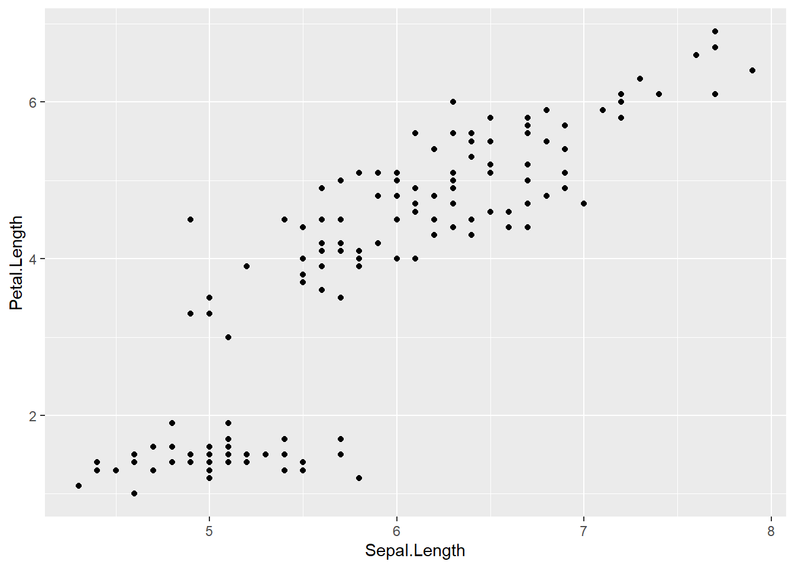
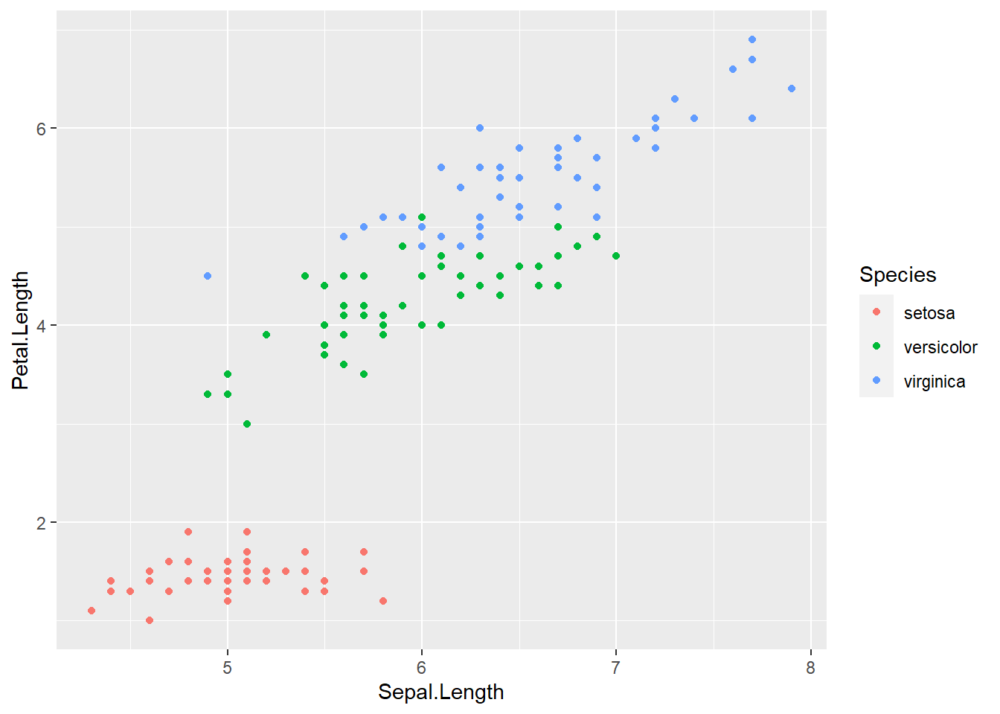

Capítulo 4 Gráficos estáticos con ggplot2
- En esta sección podrás ver una guía introductoria a gráficos estáticos usando
ggplot2. - Sirve para hacer gráficos mucho más elegantes.
- Implementa el concepto de “gramática de gráficos en capas.”
- Cuenta con muchas opciones de personalización.
install.packages("ggplot2")
require(ggplot2)Primero veamos las variables de la base de datos iris:
iris %>%
str()'data.frame': 150 obs. of 5 variables:
$ Sepal.Length: num 5.1 4.9 4.7 4.6 5 5.4 4.6 5 4.4 4.9 ...
$ Sepal.Width : num 3.5 3 3.2 3.1 3.6 3.9 3.4 3.4 2.9 3.1 ...
$ Petal.Length: num 1.4 1.4 1.3 1.5 1.4 1.7 1.4 1.5 1.4 1.5 ...
$ Petal.Width : num 0.2 0.2 0.2 0.2 0.2 0.4 0.3 0.2 0.2 0.1 ...
$ Species : Factor w/ 3 levels "setosa","versicolor",..: 1 1 1 1 1 1 1 1 1 1 ...4.1 Primer gráfico con ggplot2
Los gráficos con ggplot2 suelen tener la siguiente estructura
# Llamado a la función "ggplot" e indicar base de datos con la información a graficar
ggplot(data = iris) +
# Aesthetics: Cómo dibujar los distintos trazos, formas y colores del gráfico, "Bosquejo"
aes(x = Sepal.Length, y = Petal.Length) +
# Geom del gráfico que necesitamos ver (puntos, lineas, barras, etc.)
geom_point()
Podemos omitir el nombre de los parámetros una vez que tengamos más practica.
ggplot(iris) +
aes(Sepal.Length, Petal.Length) +
geom_point()
4.2 Aesthetics
Acá vamos a indicar que variables van en el gráfico, en conjunto a parámetros adicionales según lo que necesitemos.
x: Variable que va en el eje X.y: Variable que va en el eje Y.color: Dentro de las aesthetics significa colorear según una variable categórica.fill: Dentro de las aesthetics significa rellenar de un color según una variable categórica.
Ejemplo:
Hacer un scatter plot de Sepal.Length y Petal.Length que coloree los puntos según Species.
ggplot(data = iris) +
aes(x = Sepal.Length, y = Petal.Length, color = Species) +
geom_point()
4.3 Geoms
Indica que tipo de gráfico necesitamos ver.
Entre las principales geoms se encuentran:
4.3.1 geom_point()
Es el gráfico de dispersión. Recomendado para identificar visualmente relaciones entre variables.
Ejemplo:
ggplot(data = iris) +
aes(x = Sepal.Length, y = Petal.Length, color = Species) +
geom_point()
4.3.2 geom_line()
Es el gráfico de lineas. Recomendado para graficar series de tiempo.
Ejemplo:
require(datasets)
data("economics")
economics %>% strspec_tbl_df[,6] [574 x 6] (S3: spec_tbl_df/tbl_df/tbl/data.frame)
$ date : Date[1:574], format: "1967-07-01" ...
$ pce : num [1:574] 507 510 516 512 517 ...
$ pop : num [1:574] 198712 198911 199113 199311 199498 ...
$ psavert : num [1:574] 12.6 12.6 11.9 12.9 12.8 11.8 11.7 12.3 11.7 12.3 ...
$ uempmed : num [1:574] 4.5 4.7 4.6 4.9 4.7 4.8 5.1 4.5 4.1 4.6 ...
$ unemploy: num [1:574] 2944 2945 2958 3143 3066 ...ggplot(data = economics) +
aes(x = date, y = unemploy) +
geom_line()
4.3.3 geom_histogram
Es el histograma. Sirve para ver la distribución de una variable
Ejemplo:
Al ser solo una variable, solo hay que especificar un argumento en aes.
ggplot(data = iris) +
aes(x = Sepal.Length) +
geom_histogram()
4.3.4 geom_boxplot
Es el gráfico de caja y bigote. Sirve para ver la dispersión y cuartiles de una variable.
Ejemplo:
Al ser solo una variable, solo hay que especificar un argumento en aes.
ggplot(data = iris) +
aes(y = Sepal.Length, fill = Species) +
geom_boxplot()4.3.5 geom_bar
Es el gráfico de barras. Sirve para ver con longitudes proporcionales a los valores que representan.
Ejemplo:
ggplot(data = iris) +
aes(x = Species, fill = Species) +
geom_bar()
Argumentos de un geom:
aes(): En caso de querer usar una aesthetic distinta a la usada anteriormente.color: Colorea el gráfico según el color que indiquemos.
Ejemplo:
ggplot(data = economics) +
aes(x = date, y = unemploy) +
geom_line(color = "dodgerblue1")fill: Rellena el gráfico según el color que indiquemos.
Ejemplo:
ggplot(data = iris) +
aes(x = Sepal.Length) +
geom_histogram(fill = "deepskyblue1")
Podemos añadirle el argumento color para colorear los contornos con otro color:
ggplot(data = iris) +
aes(x = Sepal.Length) +
geom_histogram(color = "deepskyblue4", fill = "deepskyblue3")linetype: Para indicar el tipo de linea que necesitamos en el gráfico.

Ejemplo:
ggplot(data = economics) +
aes(x = date, y = unemploy) +
geom_line(linetype = "longdash")size: Cambia el tamaño de la geom del gráfico.
Ejemplo:
ggplot(iris) +
aes(Sepal.Length, Petal.Length) +
geom_point(size = 3)alpha: Añade transparencia a la geom gráfico.
Ejemplo:
Añadir un 50% de transparencia al gráfico.
ggplot(data = iris) +
aes(x = Sepal.Length) +
geom_histogram(color = "deepskyblue4", fill = "deepskyblue3", alpha = 0.5)4.4 Labs
Es una capa para indicar las etiquetas de Eje y título en los gráficos.
Ejemplo:
ggplot(data = economics) +
aes(x = date, y = unemploy) +
geom_line(color = "brown4", linetype = "solid") +
labs(x = "Año", y = "Desempleo", title = "Desempleo a través del tiempo",
subtitle = "1965 a 2010")4.5 Lims
Es una capa para indicar los límites de los ejes.
Ejemplo.
ggplot(data = iris) +
aes(x = Sepal.Length, y = Petal.Length, color = Species) +
geom_point() +
lims(x = c(6, 8), y = c(4, NA))4.6 Temas
Sirve para establecer un tema de fondo:
Los temas que se pueden usar por defecto con ggplot2 son:
theme_gray:
ggplot(data = iris) +
aes(x = Sepal.Length, y = Petal.Length, color = Species) +
geom_point() +
theme_gray()
theme_bw:
ggplot(data = iris) +
aes(x = Sepal.Length, y = Petal.Length, color = Species) +
geom_point() +
theme_bw()theme_linedraw:
ggplot(data = iris) +
aes(x = Sepal.Length, y = Petal.Length, color = Species) +
geom_point() +
theme_linedraw()theme_light:
ggplot(data = iris) +
aes(x = Sepal.Length, y = Petal.Length, color = Species) +
geom_point() +
theme_light()theme_dark:
ggplot(data = iris) +
aes(x = Sepal.Length, y = Petal.Length, color = Species) +
geom_point() +
theme_dark()theme_minimal:
ggplot(data = iris) +
aes(x = Sepal.Length, y = Petal.Length, color = Species) +
geom_point() +
theme_minimal()theme_classic:
ggplot(data = iris) +
aes(x = Sepal.Length, y = Petal.Length, color = Species) +
geom_point() +
theme_classic()theme_void:
ggplot(data = iris) +
aes(x = Sepal.Length, y = Petal.Length, color = Species) +
geom_point() +
theme_void()¡Puedes buscar muchos temas más en internet!
4.7 Gráfico ggplot como un objeto
- Podemos guardar un gráfico
ggplotcomo un objeto de R. - Es muy eficiente.
Ejemplos:
4.7.1 1. Distintos Geoms
Guardamos el gráfico como una variable
grafico_Sepal.Length <- ggplot(data = iris) +
aes(x = Sepal.Length)Luego construimos los gráficos:
- Histograma
grafico_Sepal.Length +
geom_histogram(color = "dodgerblue4", fill = "dodgerblue3", alpha = 0.5) +
theme_bw()- Boxplot
grafico_Sepal.Length +
geom_boxplot(aes(fill = Species)) +
coord_flip() + # Voltear ejes
theme_light()4.7.2 2. Gráficos interactivos
No funcionan en archivos .pdf. Creamos una variable con el gráfico:
# install.packages("plotly")
# require(plotly)
tiempo_y_desempleo <- ggplot(data = economics) +
aes(x = date, y = unemploy) +
geom_line(color = "brown4", linetype = "solid") +
labs(x = "Año", y = "Desempleo", title = "Desempleo a través del tiempo",
subtitle = "1965 a 2010") +
theme_bw()Creamos gráfico interactivo:
# install.packages(plotly)
tiempo_y_desempleo %>%
plotly::ggplotly()4.8 Actividad
Usando la base de datos de siguiente link, genere un gráfico de lineas para ver la evolución de la cantidad de casos por día en Chile, Argentina y Perú en enero de 2021. ¡Personalizelo a su gusto!
Hint: Use dplyr y magrittr.
4.9 Solución de Actividad
require(dplyr)
require(magrittr)
require(ggplot2)
require(plotly)
data <- vroom::vroom(here::here("data", "covid", "owid-covid-data.csv"))
chile_arg_peru_01_2021 <- data %>%
select(location, date, new_cases) %>%
filter(location %in% c("Chile", "Argentina", "Peru")) %>%
filter(date >= "2021-01-01" & date <= "2021-01-31") %>%
filter(!is.na(new_cases))
grafico_actividad <- ggplot(data = chile_arg_peru_01_2021) +
aes(x = date, y = new_cases, color = location) +
geom_line(size = 1) +
labs(x = "Fecha", y = "Casos Nuevos", title = "Nuevos casos por día en enero 2021",
subtitle = "Chile, Argentina y Perú", caption = "Figura 1") +
theme_bw() +
scale_color_manual(labels = c("Arg", "Chi", "Per"), # Nombre de Leyendas
values = c("deepskyblue", "red", "gray")) + # Color de Leyendas
guides(color = guide_legend("País")) # Título de Leyendas
grafico_actividad %>%
ggplotly()